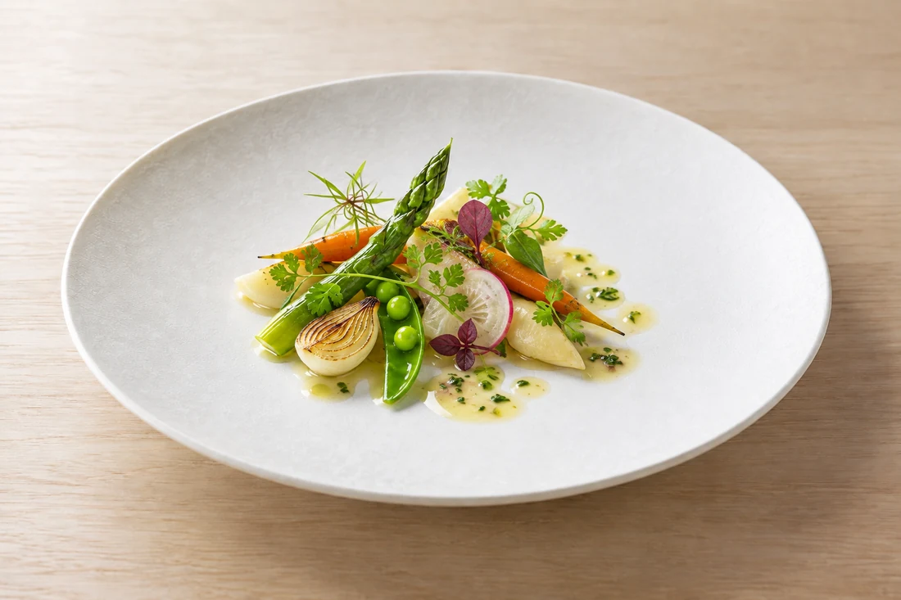
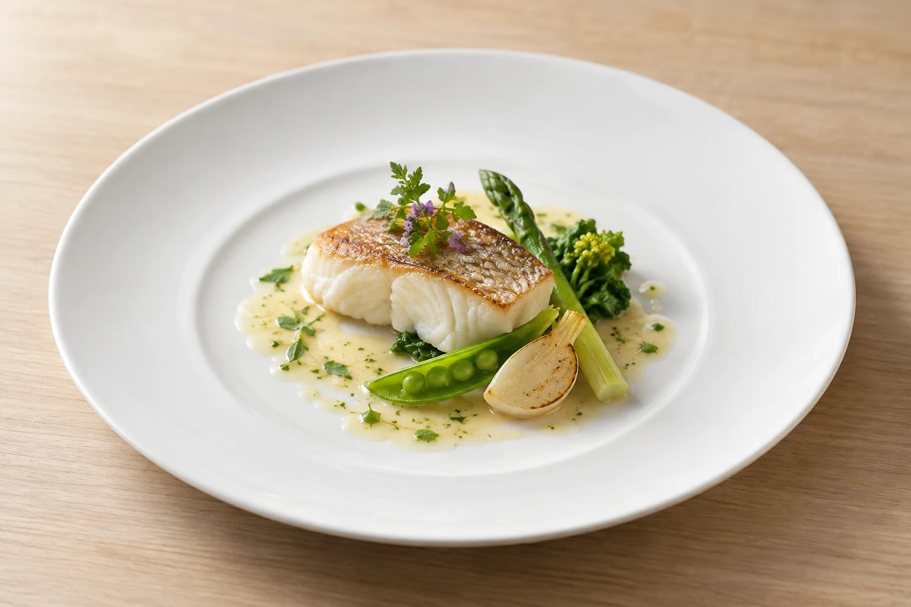
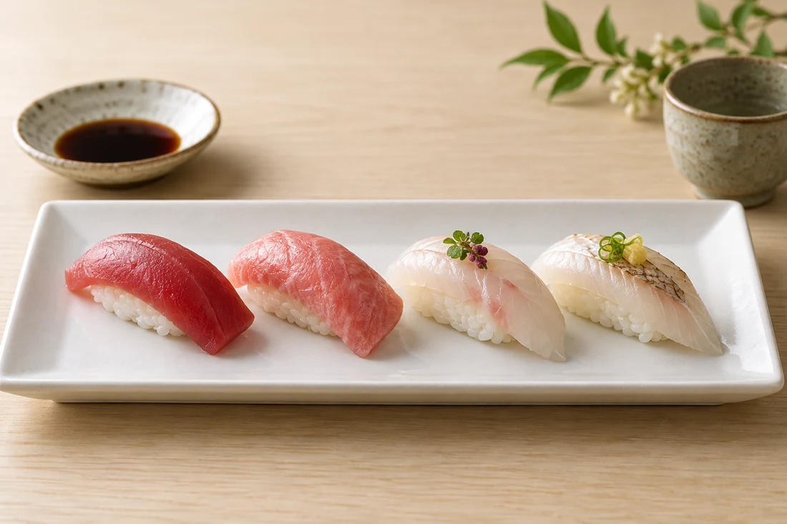
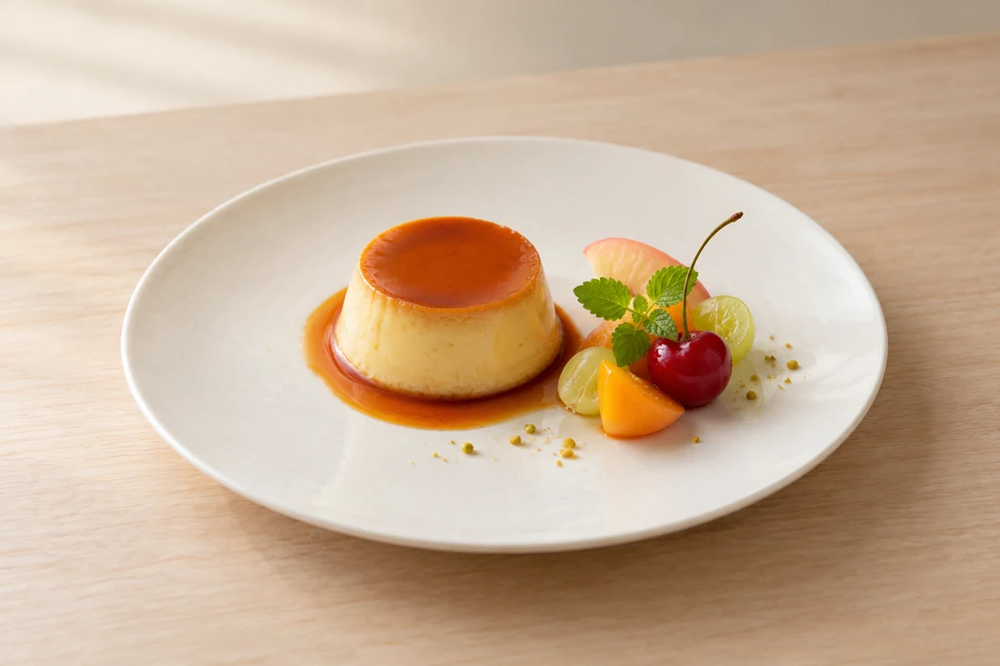

01
はじまりの一皿
彩りのある前菜から、食事の時間が始まります。

和の感性と洋の技が出会う一皿。
CONCEPT / お料理
和食の感性とフレンチの表現を重ねて。
前菜から食事、デザートまで、その日の料理をゆっくりと楽しむひとときを。
料理は一例です。内容・食材は季節や仕入れ、ご予約内容により異なります。
A GENTLE FINISH

和食の趣を感じる、食事のひととき。

食後に、甘い余韻を。
写真は一例です。実際のご用意はご予約時にご確認ください。
ご利用の前に
ご希望の日時・人数、ご予算やお料理について。
お電話でお気軽にお問い合わせください。
食物アレルギーやお苦手な食材は事前にお知らせください。対応の可否は店舗へご確認ください。
ご希望の日時と人数を、お電話でご相談ください。営業日や空席もあわせてご案内します。
お料理の内容・現在の料金・お飲み物については、ご予約の際にお電話でお問い合わせください。
ご用途とご希望の人数をお伝えください。お席やお料理についてご相談いただけます。
食物アレルギーやお苦手な食材は、予約時にお知らせください。対応の可否は店舗にご確認ください。
ACCESS / 店舗案内
営業日・営業時間は変更になる場合があります。お出かけ前にお電話でお確かめください。
Google マップを開く地図から経路をご確認いただけます。
山形・小立 / 和洋折衷